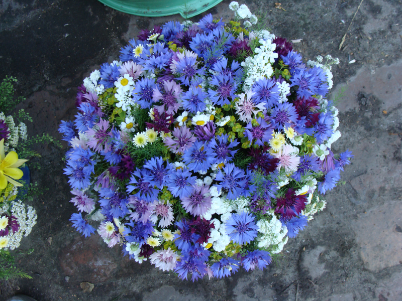

Полевые и садовые букеты
Делаю на заказ сезонные букеты из садовых цветов, выращенных в нашем регионе.
Все фотографии на сайте представленны в качестве примера. Вы сами можете выбрать состав букета и цветовую гамму.
Летние букеты
Нежные ромашки, васильки, садовые лилии, яркие цинии и календулы, георгины и другие летние цветы и травы.


Букеты на 1 сентября
День знаний - праздник, который приходится на время смены сезонов, когда лето переходит в осень. Основа букетов в это время - георгины, астры, хризантемы.
Также не стоит забывать, что цветы не просто подарок для учителя, а подарок, который преподносить будет ребёнок. Поэтому важно, чтобы букет не был слишком большим и его было удобно держать школьнику.